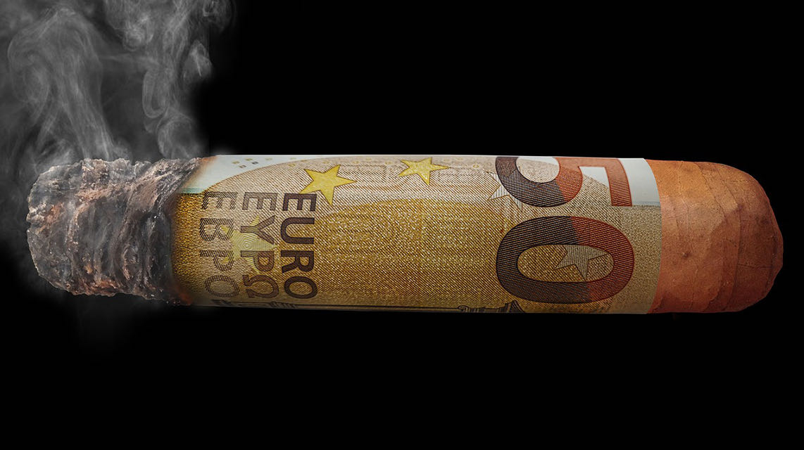

2017-11-06徐飞

015 | 在线旅游帝国Expedia崛起的背后
朗读人：秭明 08′03′′ | 3.69M
我会在这一年中介绍一些总部在西雅图，或者研发中心里面很重要的一部分在西雅图的 IT 公司。这其中除了微软和亚马逊这样的大鳄以外，还囊括了诸多在不同领域取得一定统治地位的公司们。
今天的主角是一家著名的在线旅游公司——Expedia，我将和你说说它的创业与发展史。
除了微软和亚马逊以外，Expedia 可说是总部设在西雅图的 IT 公司中最知名的一家。当然，从某种程度上来说，Expedia 与其说是家 IT 公司，不如说是一家在线旅游公司。
Expedia 的创始人就是 Zillow 的创始人理查德 · 巴顿（Richard Barton）。我想任何一个人，如果一辈子可以创立两家都很优秀的上市公司，这个人显然就是一个“大神”了。
巴顿创立 Expedia 的时候还在微软。那大概是 1994 年的时候，微软打算做一个旅游指南的 CD-ROM。巴顿觉得，只是搞个 CD-ROM 其实没什么意思，要干不如干一票大的。他是极少数在那个时候对互联网就有所了解的人之一，所以他想做一个在线的旅游信息提供商。
那个时候的微软还没有后来那么庞大，他很容易就见到了比尔 · 盖茨和史蒂夫 · 鲍尔默，并且说服了他们。于是他加班加点地干活，在 1996 年的时候，一个叫作 Expedia 的网站上线了。
1999 年的时候，微软决定将 Expedia 拆分出去，这大概是比尔 · 盖茨觉得一家做软件的公司同时做旅游代理有点不伦不类吧。
这个网站被拆分出去时，正赶上了 2000 年之前的互联网泡沫，这恰是一个契机，它很顺利地就在纳斯达克上市了。这对 Expedia 无疑是个非常幸运的事情。巴顿就继续做 CEO，这个 CEO 一做就做到了 2003 年。
这家公司的名字 Expedia，按照巴顿在一次采访里面的解释是 Exploration 和 Speed 的组合，这两个词分别意为“探索”和“速度”，因此 Expedia 象征着“迅速查找旅游的线路”。这个名字不但应景，而且非常有特色，让 Expedia 的品牌旗帜非常鲜明。
2003 年的时候，IAC 决定花钱买下 Expedia 私有化。这次收购到底溢价多少，我无从查实了，但我有一点不太理解：为什么巴顿就想卖它了，而不是坚持下去、继续做下去？但是从后来的资料看，巴顿可能是一个更适合创业，而不是经营企业的人。Expedia 到了 2003 年的规模，他也有点儿做不动了。加上互联网泡沫刚过，市场一片萧条。有人买，此时卖掉其实未必是件坏事。
买下来的结果就是让 CEO 拿了钱并退出了。巴顿估计是分到了让自己这辈子都衣食无忧的钱，他在拿着钱去完善自己下一个创业计划的同时，也度假休息了一年。
休息一年以后回到西雅图，他和从微软到 Expedia 一路同行的老同志罗伊德 · 福林克（Lloyd Frink）一起，开始了一段新的创业之旅。
这次创业一直处于保密状态，直到万事俱备只欠东风的 2006 年，Zillow 才作为一家房地产信息整合和查询的公司暴露在大众面前。
后来接受采访的时候，巴顿表示自己的确在 2003 年的时候就有了新想法，打算做 Zillow 了。如果这个时间是真的，和 Redfin 创始人开始搞 Redfin 的时间其实也差不多。
所以说，牛人的观念总是惊人得相似。有关 Zillow 和 Redfin 的故事，我会在后面的文章里讲述，这里就不再展开了。
买下 Expedia 的 IAC 的董事长是巴里 · 迪勒（Barry Diller），而迪勒是一个企业经营和资本运作的高手。从这方面来说，Expedia 是成于巴顿，但绝对是兴旺发达在迪勒的手上。
经过两年的整合，迪勒决定在 2005 年的时候让 Expedia 重新上市，并采用了同样的股票代码。
但是卷土重来的 Expedia 背后，不再是一个对旅游行业不熟悉的巴顿，而是有很多年经验的迪勒。
重组以后的 Expedia 包括了无数大大小小的品牌，除了著名的 Expedia.com 以外，知名的还有 Hotels.com 以及 HotWire.com，加上 2004 年买入并专门做企业业务的 Egencia，以及后世非常著名的做旅游社区的猫途鹰（TripAdvisor），等等。
这次重新打包上市后，Expedia 在资本市场上受到了追捧。有钱在手，加上懂得旅游经营的管理团队，这让 Expedia 从此成为了全球最大的旅游代理，从此以后从未掉队过。
到 2011 年的时候，迪勒又决定把 Expedia 里面与旅游媒体相关的业务都重新打包上市，并保留了所有和旅游交易相关的业务，包括所有的酒店、机票、租车、游轮，等等。
这次拆分并独立上市的公司里面最重要的是猫途鹰，Expedia 和猫途鹰就这样成为了两家公司。但是两者业务完全独立了，而董事长却都是迪勒。
这种资本运作和拆分壮大不仅需要眼光和远见，而且需要强大的资本运作能力，迪勒正是有这种远见的资本运作者。我们可以说，Expedia 最初的成功离不开巴顿的远见，但是真正在资本市场上呼风唤雨，壮大成长，主要还是缘于身为资本运作高手的董事长迪勒。
我们不得不佩服迪勒的眼光，猫途鹰从 Expedia 剥离出来成为独立的旅游媒体社区以及评论中心之后，迅速发展成为全球当之无愧的第一旅游社区。
一个社区的力量，在社交网络没有出现之前可能不被大家理解，Facebook、Yelp 之类给大家树立的榜样，使得猫途鹰这个旅游社区加评价的品牌影响力非常得巨大。
我想，如果当初这个品牌没有从 Expedia 剥离出去，那么因为既做裁判又做观众的缺陷，猫途鹰绝无可能发展到今天的地位。
作为旅游公司的 Expedia 就介绍到这里，而作为 IT 公司的 Expedia 就更有意思了。
前面说到，Expedia 总部在西雅图这边，又是从微软分离出去的，所以其技术层面一方面保留了非常重的微软痕迹，并非是湾区或者其他初创公司的那一套，更多地基于 Linux 和 Java。另外一方面，Expedia 的董事长通过资本运作又收购了大大小小无数的品牌，而这些品牌们在技术上又都是各自为政自然生长的。
此外，Expedia 还是一家商业地位在很大程度上远高于技术地位的公司。公司优先考虑商业决策，而对统一技术框架的实现兴趣不足。
经过多年的自然生长以后，Expedia 公司里面组和组之间、品牌和品牌之间的技术五花八门。这种五花八门带来的副作用现在逐渐体现出来。
比如说，不同品牌之间的数据无法做到实时的共享。一个用户在不同品牌下面的账号的行为不容易做有效的关联分析。因为技术的不足反而拖累了商业的发展，这就是多年来重视商业而不重视技术的直接体现。
Expedia 对技术的态度，说得好听一点，这是百花齐放，说得不好听一点，那就是在技术上没有足够的积累和底蕴。作为一家旅游公司，它的基础架构层面的建设是很值得商榷的，这也反过来在不断地阻挠其商业模式的进步。
Expedia 的这样一个状态，也直接导致其 IT 工作人员很大程度上难有土壤成为一流的 IT 人员。或许，这也是一些朋友会有在 Expedia 过渡几年的想法，并在择业时往往优先选择其他公司的原因。
和商业的蒸蒸日上相比，Expedia 在技术层面显得有些混乱。在西雅图，有些公司有些组的领导就私底下有 Expedia 出来的一律不给面试的潜规则。这种潜规则是不是公平暂且不说，但是这种潜规则实实在在地发生了，而其背后的原因，值得我们每个人去深思。

©版权归极客邦科技所有，未经许可不得转载
Measure
Measure